Editor
Approved application · approved logoEvery image below is an actual canonical PNG. Open an image for its full resolution. These are authored design scenes, not current-app browser captures.
Block action · delete
block-action-deleteActions and implementation pointers
× · Cancel · Confirm
apps/web/src/components/editor/document-toolbar.tsxpackages/better-editor/src/engine/suggestions.tspackages/better-editor/src/ui/context-menu.tsx

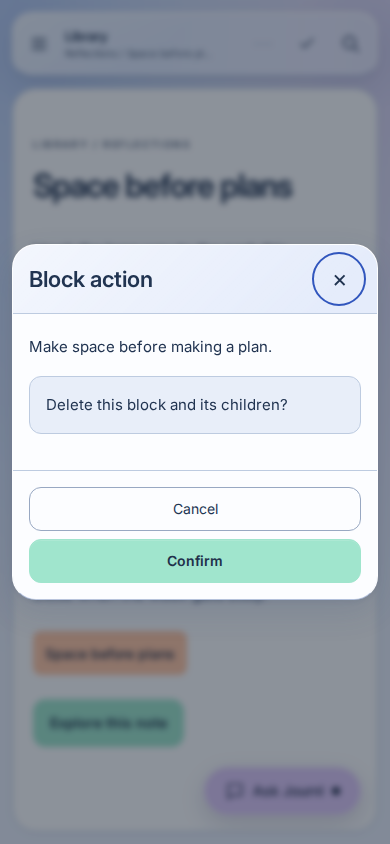
SHA256 99433d4913866d766cdeb61ab7279f1c25d9b0ef81ab31e99102f1325ce9ac83

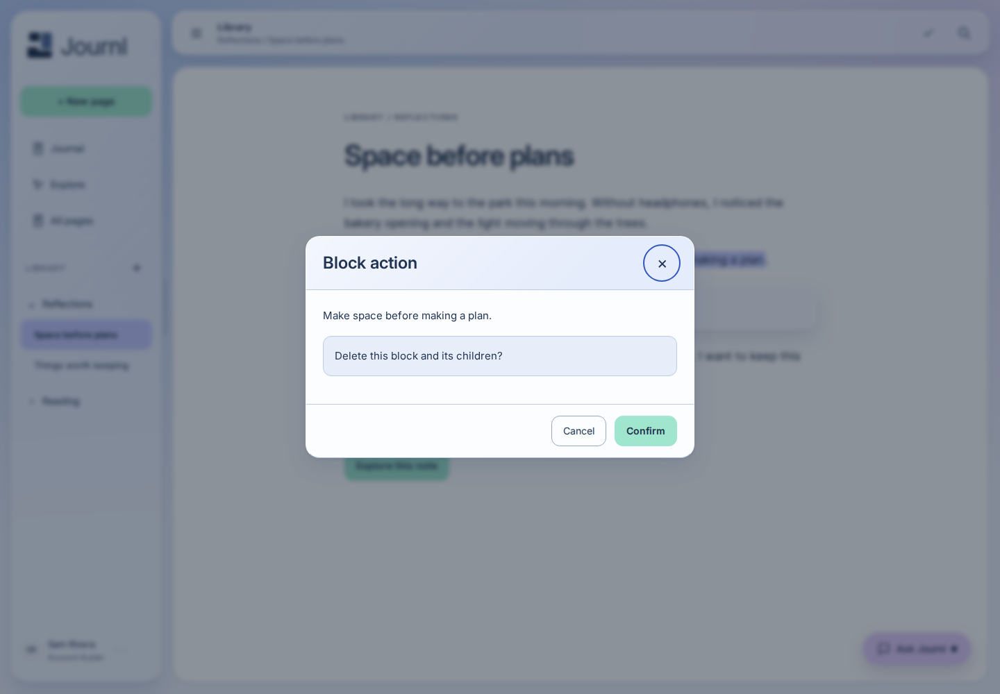
SHA256 0a55a61eb189c7d3fd6c91f7d5f3ae32b0ee1fb78bd9fac9508f5897dcc05396

SHA256 e976d13bfd955cb2b67bc9a31d81fc5b1da97130ecb0fc445896828c42629910

SHA256 397b60601ba6e5b438f4ca4ce0983d345cf801de545ab3eeba7ccbe12c15cf2d
Block action · undo
block-action-undoActions and implementation pointers
+ New page · Journal · Explore · All pages · ⌄ · Reflections · › · Reading · Cancel · Done · Ask Journl · Today’s Journal · Close · Instant · Thinking
apps/web/src/components/editor/document-toolbar.tsxpackages/better-editor/src/engine/suggestions.tspackages/better-editor/src/ui/context-menu.tsx

SHA256 cb5166df9d5eaafe25143aa07d440187d9e51f5bc4c900a6fe2b6e5185bab439

SHA256 e8d6d6623e232a5dc612b883bb7763f1cb76ef4cf059dda77f2746c680d27379

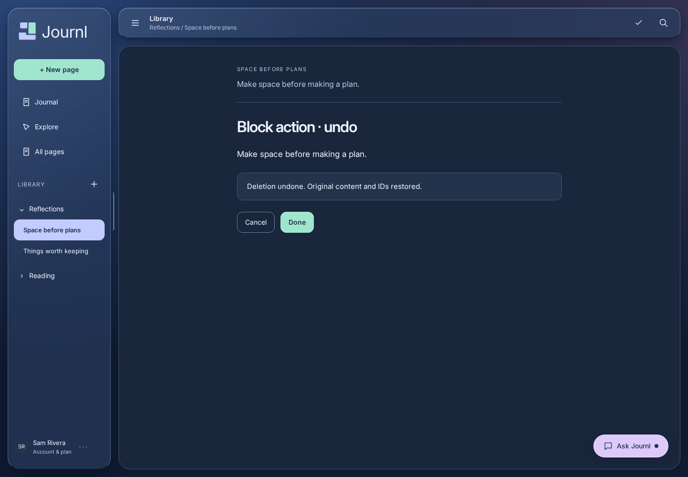
SHA256 a39c30ad9ccadfb371eab5758f0debea26c15c0f084d9f908d2a7507f866b137

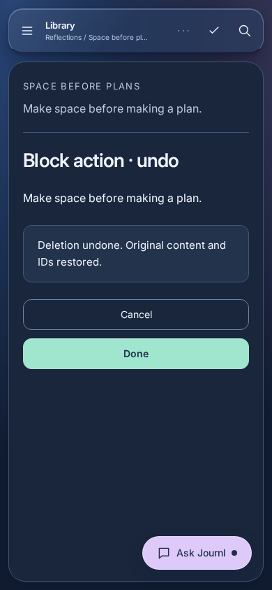
SHA256 4c2ad9f55bd711e12deadc5f0fd2a2c4df729cba95e929d08ddd525ea745cefb
Block action · redo
block-action-redoActions and implementation pointers
+ New page · Journal · Explore · All pages · ⌄ · Reflections · › · Reading · Cancel · Done · Ask Journl · Today’s Journal · Close · Instant · Thinking
apps/web/src/components/editor/document-toolbar.tsxpackages/better-editor/src/engine/suggestions.tspackages/better-editor/src/ui/context-menu.tsx

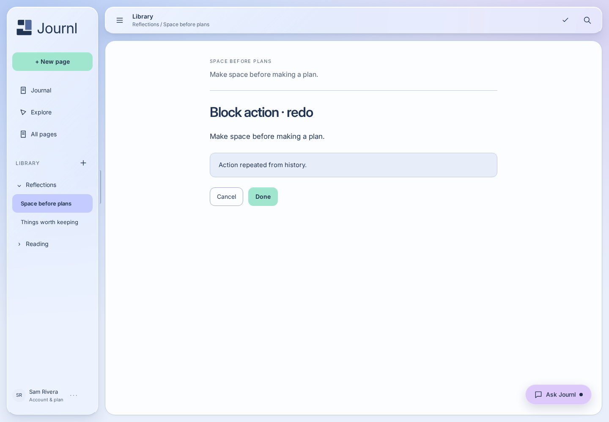
SHA256 57c677be393ae777f4143ccf57fa41a718e9ff6dde49444a76fc8b79b8f9f66b

SHA256 ec0b17ee9f21ff530493616e8e15d5ee0fc1a548cd481c3a122816b4168828c5

SHA256 4e3b4d4130a3c29be272d3e7ded96c20e19a97a483178b419ec72ec70f3ed0bd

SHA256 e614793395a4a503a058072182d425dc000937914fdc784df8e0c3af5e548470
Link / mention · ready
link-readyActions and implementation pointers
× · Cancel · Apply link
apps/web/src/components/editor/document-toolbar.tsxpackages/better-editor/src/engine/suggestions.tspackages/better-editor/src/ui/context-menu.tsx

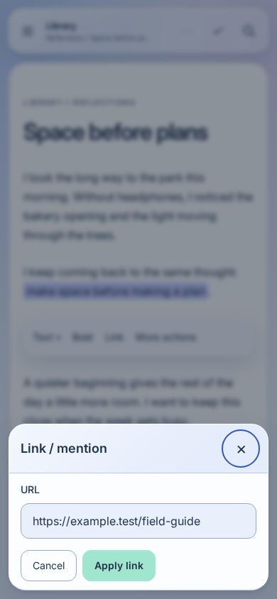
SHA256 09ad757bd707972bbf52f923b7a6c74e3c148f2935ee23d3ccc7386db6cdad43

SHA256 af102ddef0f7b37a31d986b9e07ebb8be89c54d516de66a8b9cf6c6c0c255220

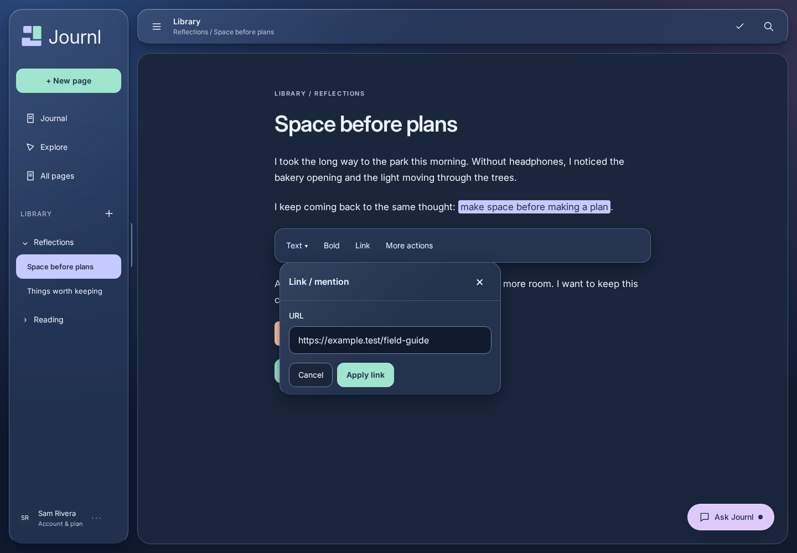
SHA256 e1c1bad33f9952179f42cacd0eedcaedf346b1caec964f2eb1a3dc3bc2d76b0a

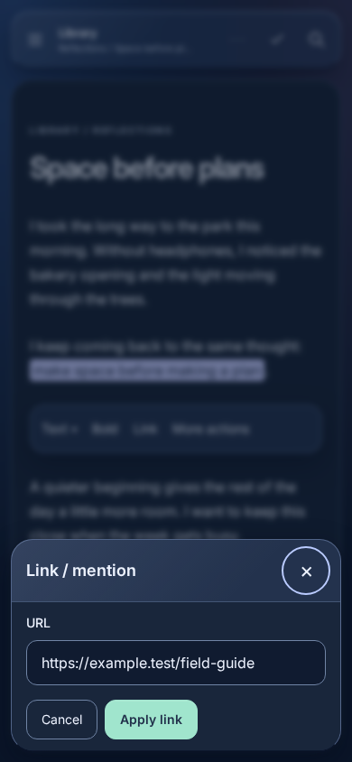
SHA256 28434ca366142541bbd1aad44a4b22a16c05e6a848a02e767a857d5319bb604d
Link / mention · invalid
link-invalidActions and implementation pointers
× · Apply link
apps/web/src/components/editor/document-toolbar.tsxpackages/better-editor/src/engine/suggestions.tspackages/better-editor/src/ui/context-menu.tsx

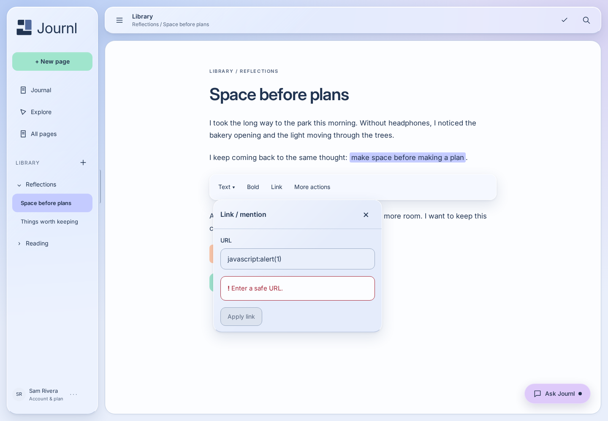
SHA256 ed7a7cfa35777da01b0e0cfc72586fc29481d0eb0412163f398cce4107bda458

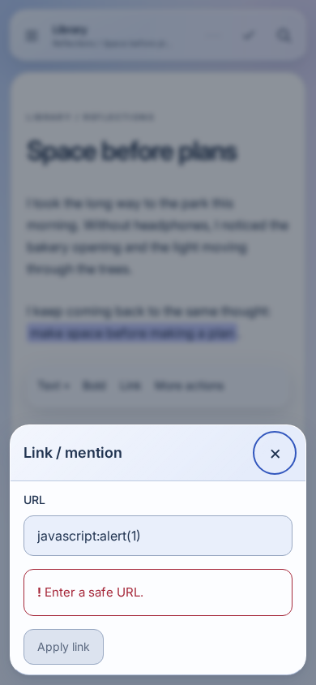
SHA256 af6fde7401ba859e288717597061bcf7410ea71e2b588006bbc4d01b88ff8d54

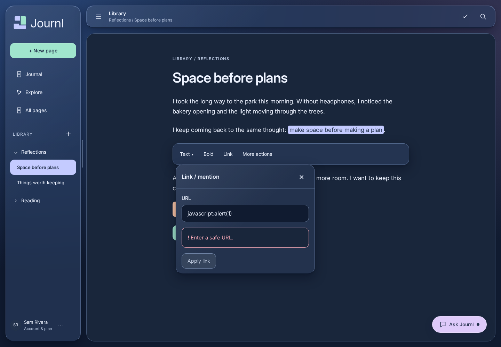
SHA256 998a9d2ccbc2cce644a9797393ae1f7a01c2ad5f494d471bba0081ee447c67e3

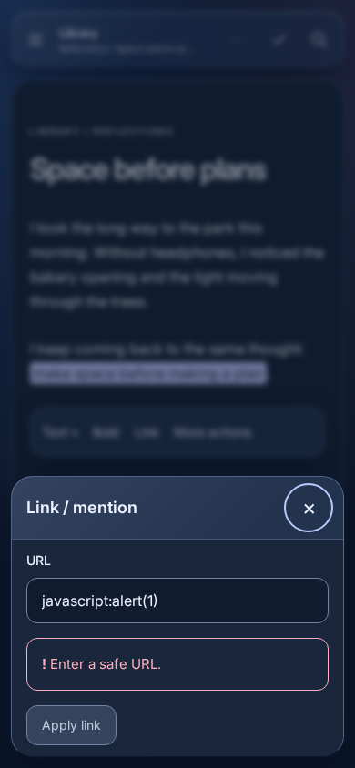
SHA256 ef7d51c28d1f256f0c73a75ad5cff8fa474c96466f6340bfa46774a15d8bb9cd
Link / mention · edit
link-editActions and implementation pointers
× · Remove link · Apply link
apps/web/src/components/editor/document-toolbar.tsxpackages/better-editor/src/engine/suggestions.tspackages/better-editor/src/ui/context-menu.tsx

SHA256 fbf06a0fd6e5e7a96b96df10689a2b6e599de4c77d0db1615c5eae53bf0102c6

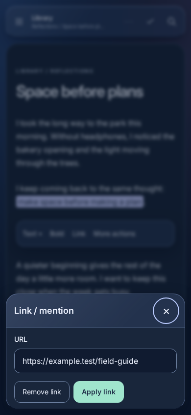
SHA256 6434e18a19b4766e83587e5c46730e81f10ed965f111607e2d871c49180e6906

SHA256 357f4f8919ea7dcaa62bad8d5bd1efe12b929ee3a014b98779466a4cdc41d3dc

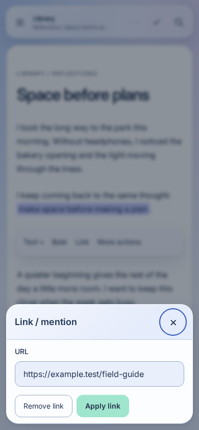
SHA256 6fe9f6707e0b6d19a37548329a193fe427354a90b21ed352dbdf8875946ff014
Link / mention · mention
link-mentionActions and implementation pointers
× · Cancel · Insert mention
apps/web/src/components/editor/document-toolbar.tsxpackages/better-editor/src/engine/suggestions.tspackages/better-editor/src/ui/context-menu.tsx

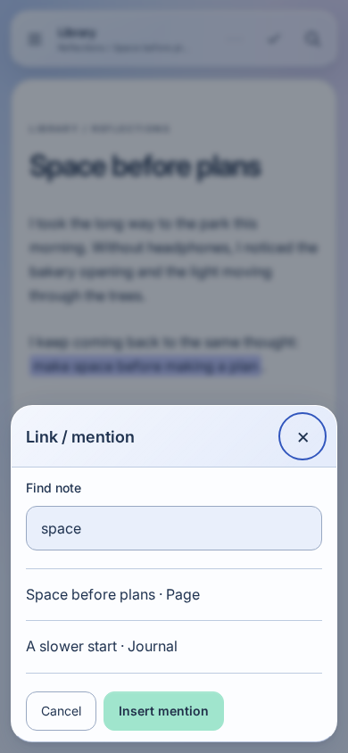
SHA256 5b5fcf7ec8bffbd239ec1375b168b8e4e30321f0bbf68835faa8cf1dbf344bc4

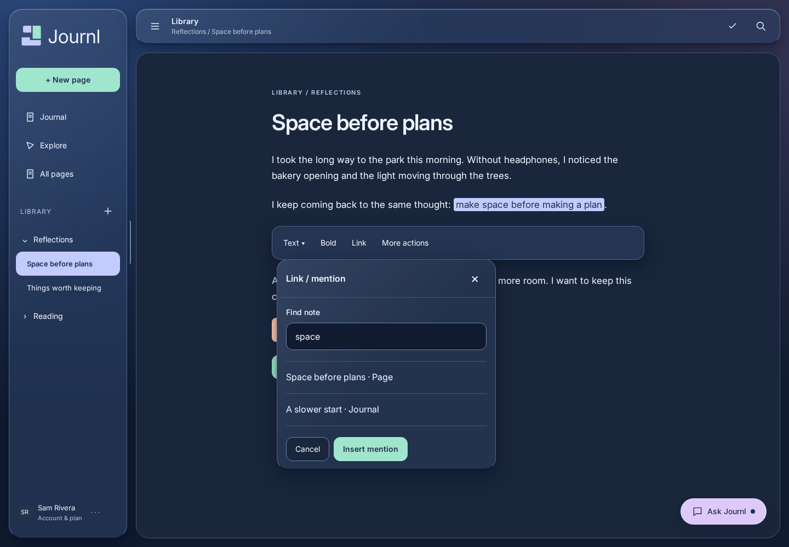
SHA256 843e3f021009a3220c37ff71b3f7e0f0f2670809def5fcb61fc48536f28494bb

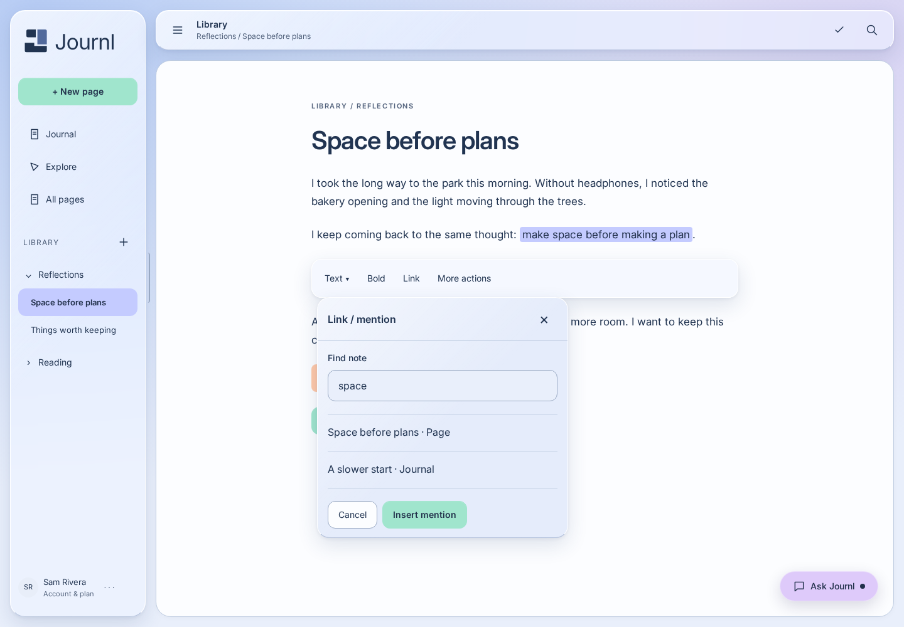
SHA256 30a31bd4852dd97857f4ddeb32d6a474f1604c3b18ef0e2f8ea95aaf28495d22

SHA256 f1a70ab4ba40500f8eab816acd117361ed60ce1b755700a310726003f7ccd474
Link / mention · readonly
link-readonlyActions and implementation pointers
× · Apply link
apps/web/src/components/editor/document-toolbar.tsxpackages/better-editor/src/engine/suggestions.tspackages/better-editor/src/ui/context-menu.tsx

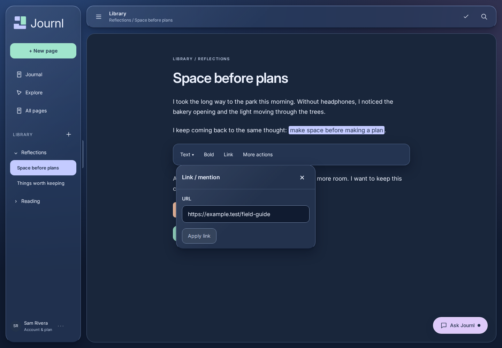
SHA256 621939552b927c6b76909fdd34fb456d8bf810289ec8d095df04467a15c4559a

SHA256 4b1ddf5dd5a98b54dee0528d6ca541fbefc1f8bb65c59fcc364d148051e644ed

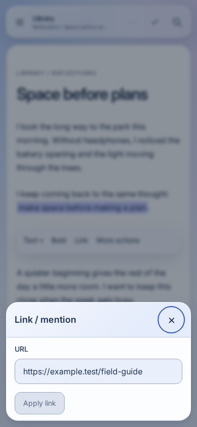
SHA256 b287fb945853eb5e9e3c659f8d4414adf2c75570288bd324c1676928f527ab06

SHA256 fed354beb889a038bfbe95268ed954f02ee5dfc96d00ca29d5d4844ecc1b1fc3
Code language · languages
code-languagesActions and implementation pointers
× · Auto · Plain text · JavaScript · TypeScript · Python · JSON
apps/web/src/components/editor/document-toolbar.tsxpackages/better-editor/src/engine/suggestions.tspackages/better-editor/src/ui/context-menu.tsxpackages/better-editor/src/ui/code-block.tsx

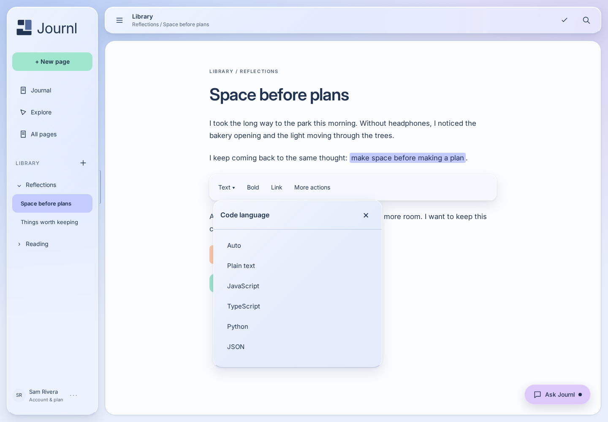
SHA256 35bffa5df12e8d8e87327d883d893238c6def9ed9df71aff39ba55e66558d3a7

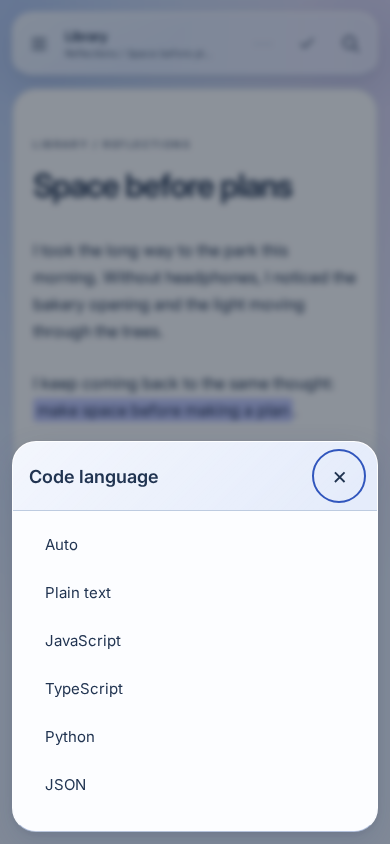
SHA256 77bc27d4809b4618b71019495adc045e9919115306166523a854293e15c50d5c

SHA256 1b4168821b1f1cd5b351e3926031e94634a616e718c9fcd143710ad81dd93a5c

SHA256 12d5cdefd09a9abdb5358eb2d6400c125a1a1c12fa37f56aec77f6d9a3785fb4
Code language · readonly
code-readonlyActions and implementation pointers
+ New page · Journal · Explore · All pages · ⌄ · Reflections · › · Reading · Language: JavaScript · Ask Journl · Today’s Journal · Close · Instant · Thinking
apps/web/src/components/editor/document-toolbar.tsxpackages/better-editor/src/engine/suggestions.tspackages/better-editor/src/ui/context-menu.tsxpackages/better-editor/src/ui/code-block.tsx

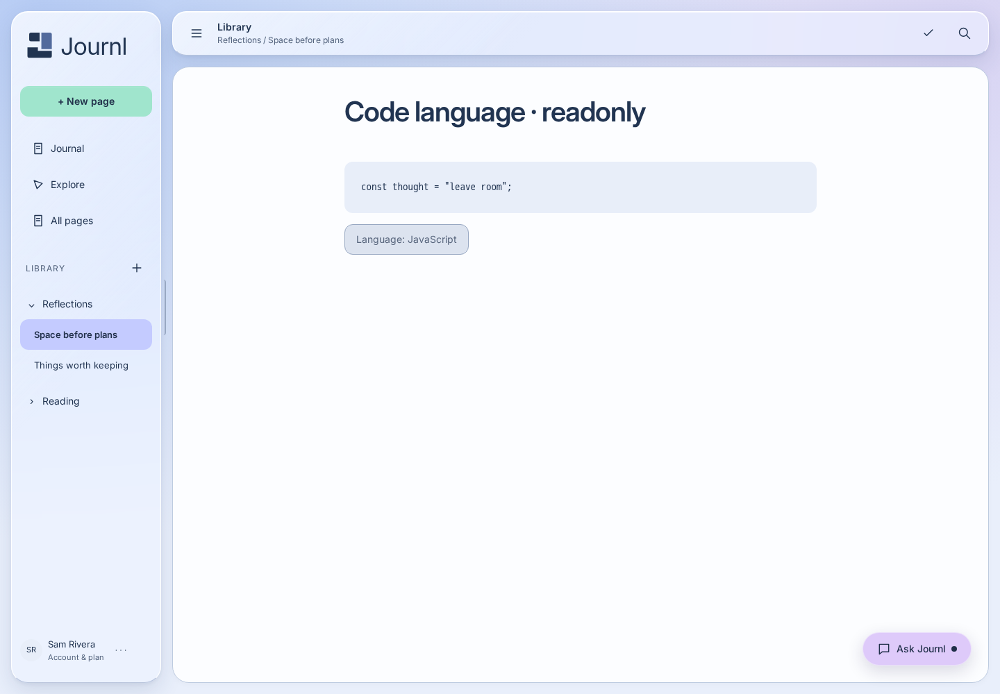
SHA256 9a9e96878dd6981e0e17036fcba49bcae10158ef03718d6e403a06021ce221ef

SHA256 e4bd42baf62313e42fdc9817648982eb442b3309a259e68a4877da8ab6f24ff7

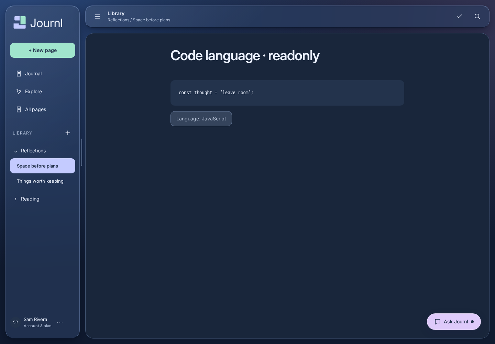
SHA256 dc13295faa61c1b119c3f82befadd2601863a8728b0ee301cb0c81c92a1d6420

SHA256 fe757579bdfdeb0aef7b58c49c81be17f82a6bd88a9a61130ee92c4fb523652e